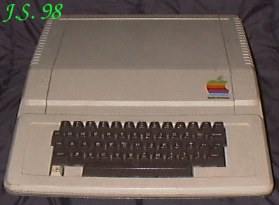
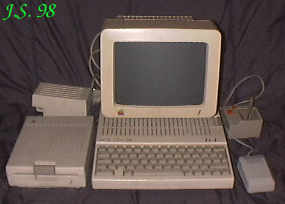
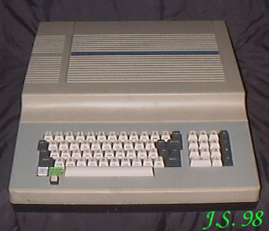
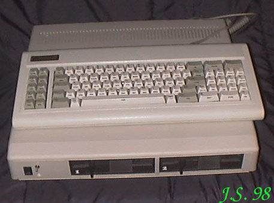

APPLEDość egzotyczny to, wbrew pozorom, owoc na polskim rynku (oczywiście komputerowym). Jednak kilka różnych egzemplarzy kupiłem w nieistniejącym już, niestety, warszawskim sklepie przy ul. Białostockiej. To była kopalnia staroci! Sklep przeniesiono potem na ul. Pruszkowską, gdzie go, jak słyszałem, zgubiła babska chciwość księgowej, która wykupiła go od firmy Pol-Can. Wymieniła, oczywiście, załogę na niekompetentną, ale rodzinną. Sklep padł był w krótkich abcugach. Zupełnie jak w bajce o złotej rybce...APPLE II Procesor 6502 / 1,023MHz.RAM 48kB.ROM 16kB.Generator obrazu zbudowany z TTL.Rozdzielczość maksymalna 280 X 192 przy czterech lub sześciu kolorach (zależnie od wersji płyty gł.).Tryb tekstowy 40 kolumn w 25 wierszach tylko duże litery, opcjonalnie karta 80 kolumnowa (slot7).Wyjście video NTSC composite z możliwościa przełaczenia na 50Hz i dołączenia kodera PAL.Porty we/wy zależnie od zamontowanych kart i/o.Wbudowany interfejs magnetofonu, opcjonalnie karta kontrolera FDD.Dźwięk jednobitowy (jak PC speaker).APPLE // c Procesor 65C02RAM 128kB z możliwością rozszerzenia do 256kB.ROM 32kBProcesor graficzny ???Rozdzielczość maksymalna 560 X 192 (2 kolory?)Grafika 280 X 192 w sześciu kolorach, 160 X 192 + 4 wiersze tekstoweTryby tekstowe 40 X 24 i 80 X 24 małe i duże literyWyjście video RGB i composite.Porty: 2 X RS232 (drukarka i modem), FDD zewnętrzny, joystick/mysz, RGB, composite video.FDD 5,25" wewnętrzny z możliwością dołączenia drugiego zewnętrznego.Dźwięk jednobitowy, głośnik, potencjometr, wyjście na słuchawki lub głośnik zewnętrzny.ZEUS Procesor 6502 i Z80.RAM 64kB.ROM 28kB (4 X 2716 + 3 X 2732).Procesor graficzny CRTC6845.Grafika - jak w Apple II 6-kolorowa.Tryb tekstowy 40/80 kolumn przełączany z klawiatury.Wbudowany port RS232Wbudowany interfejs dla dwóch FDD.Dźwięk jak w Apple II.Na płycie głównej są tylko cztery sloty: 1, 2, 5 i 7.TC 80 Procesor 6502 i Z80RAM 64kB.ROM 14kBGrafika jak w Apple II + karta 80 kolumn tekstu.Tekst 40/80 kolumn w 25 liniachOpcjonalnie karta Centronics i RS232 lub modem.Wbudowane 1 lub 2 napędy FDD 5.25" z kartą w slocie 6.Dźwięk - wbudowany głośnik. |